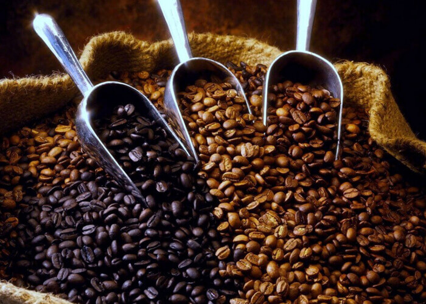
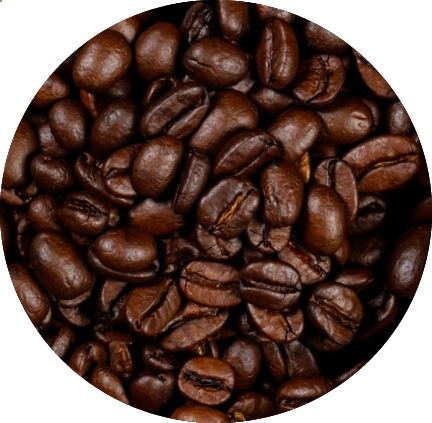
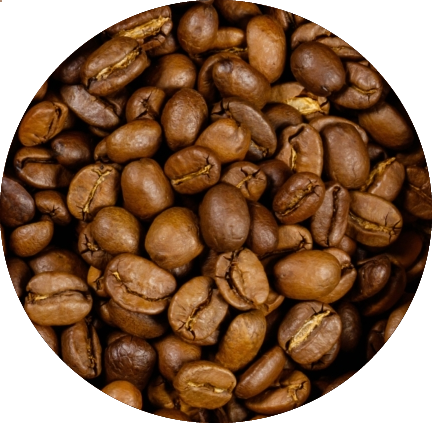
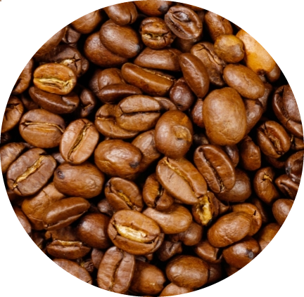
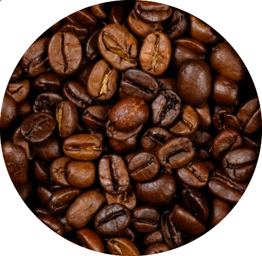

Welcome to The Grind. May your coffee kick in before reality does.
Here at The Grind we want to redefine they way you relax and unwind, whilst enjoying everything we have to offer. So why not take the time to meet up with friends and family and enjoy our great coffee, cakes and tasty food in a warm and inviting atmosphere.

Our Blends
Our roasters have over 22 years' experience in producing fantastic coffee beans. With such a wide menu to choose from, there's always something new to discover, like our freshly roasted beans or pre-ground coffee. Take a look at what is on offer today.

Rise & Grind
Rise and Grind with our strong Turbo blend. Its bold, rich texture and earthy flavours are ideal for getting you out of bed in the morning, and the generous measure of caffeine will keep you going as you start the day. Try this as an intense, powerful espresso when you're in a hurry and about to leave the house.

Kopi Jawa
A wonderful blend of Indonesian Java and Brazilian Santos creates a wonderfully strong coffee that's full of flavour, but without any bitterness. Java, or Kopi Jawa as Indonesians refer to it, is typically a strong, slightly sweet coffee, and it works wonders here with the light body and low acidity of Santos. The balance of flavours creates an indulgent blend that's best enjoyed as an espresso, but can also be used in a cafetiere or as a base for your favourite filter coffees.

Arabica Spice
An extraordinary, complex blend of 100% Arabica beans from five different coffee-growing locations across the world, puts Arabica Supreme high on the list of the finest blends to be created. Deep, rich and smooth, with an exotic, spicy aroma, the recipe for this ingenious mix of high quality, expertly roasted beans is a well-kept secret, but once tried, you’ll be left in no doubt as to how amazing it tastes.

Dark Nights
Dark Nights is a gorgeous combination of monsoon washed and Ling Tong Sumatran beans hits you immediately with its velvety sweetness, rich fruit flavours and smokey spiciness. Leaving behind an earthly and complex taste that is fantastic for a more savoury coffee, our Dark Nights is best enjoyed in the evening or after a meal, and compliments a dessert well.